Snake plots display data as horizontal bands in a serpentine layout — each row reverses direction and connects to the next through a U-turn arc. This compact layout lets you compare many items at once while preserving adjacency information such as inter-item correlations.
The package ships with three datasets from an experience sampling
study of university students (Neubauer & Schmiedek, 2024), rescaled
to a 1–5 Likert scale, and 10 built-in color palettes via
snake_palettes:
library(snakeplot)
labs5 <- c("1" = "Not at all", "2" = "Slightly", "3" = "Moderate",
"4" = "Quite", "5" = "Extremely")Daily EMA — value distribution ticks
When you have beep-level data, var and day
auto-pivot into one band per day. Ticks are positioned within
proportional zones by response level:
survey_snake(ema_beeps, var = "angry", day = "day",
colors = snake_palettes$sunset, level_labels = labs5,
title = "Anger — 14 days, value distribution")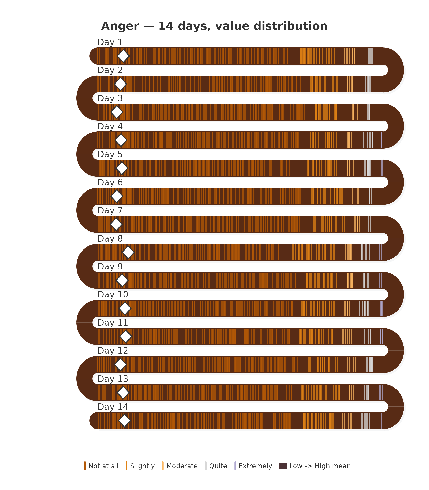
Daily EMA — distribution bars
The same daily data with tick_shape = "bar" shows how
response distributions shift across days. Use
bar_reverse = TRUE to start from the highest level:
survey_snake(ema_beeps, var = "happy", day = "day",
tick_shape = "bar", bar_reverse = TRUE,
colors = snake_palettes$sunset, level_labels = labs5,
title = "Happiness — 14 days, distribution bars")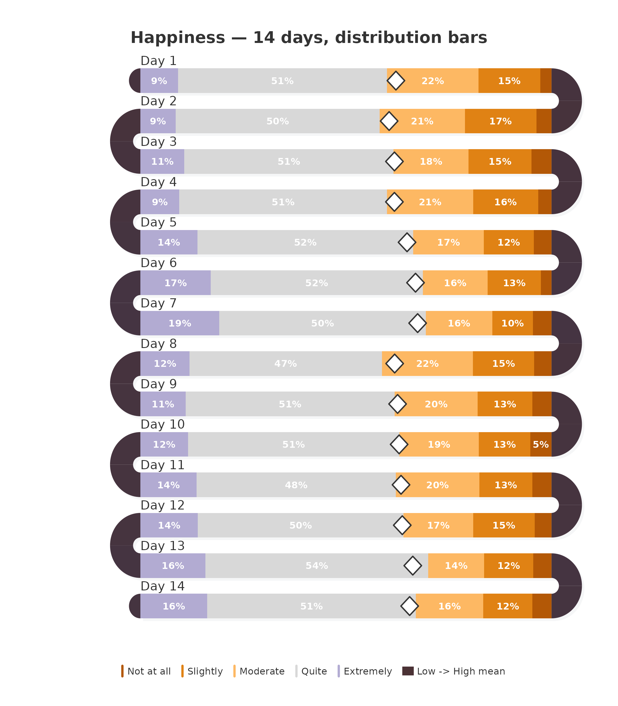
Activity timelines
activity_snake() shows daily event timelines — rug ticks
or duration blocks on a dark ribbon:
set.seed(42)
days <- c("Mon", "Tue", "Wed", "Thu", "Fri", "Sat", "Sun")
d <- data.frame(
day = rep(days, each = 40),
start = round(runif(280, 360, 1400)),
duration = 0
)
activity_snake(d)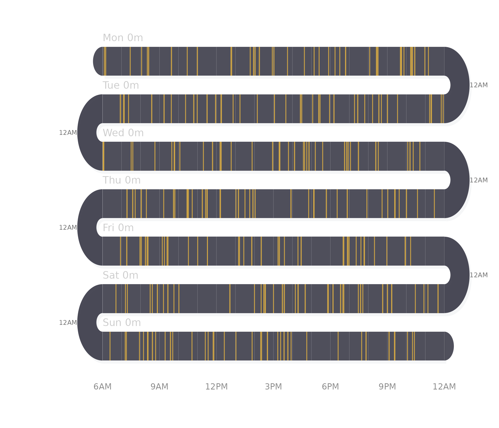
Pass character timestamps directly — they are parsed automatically:
set.seed(42)
dates <- seq(as.POSIXct("2024-03-11"), as.POSIXct("2024-03-17"),
by = "day")
events <- data.frame(
timestamp = format(
rep(dates, each = 30) + round(runif(210, 6*3600, 22*3600)),
"%Y-%m-%d %H:%M:%S"
),
stringsAsFactors = FALSE
)
activity_snake(events, title = "From character timestamps — 7 days")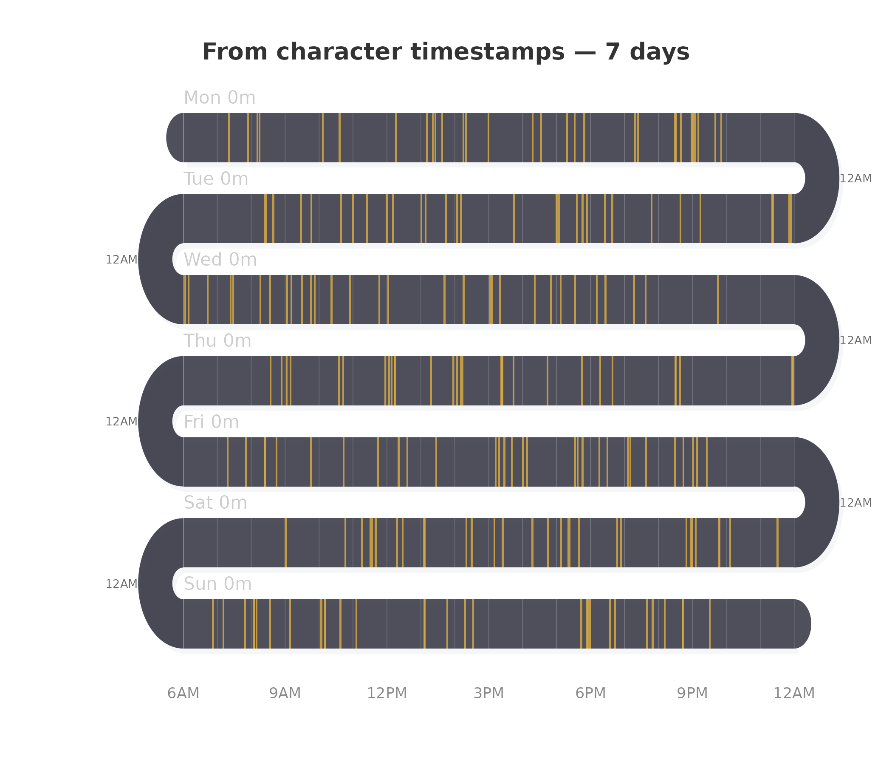
Duration blocks show event length as filled rectangles:
set.seed(42)
days <- c("Mon", "Tue", "Wed", "Thu", "Fri", "Sat", "Sun")
d2 <- data.frame(
day = rep(days, each = 8),
start = round(runif(56, 360, 1200)),
duration = round(runif(56, 15, 120))
)
activity_snake(d2, event_color = "#e09480", band_color = "#3d2518",
title = "Weekly activity — duration blocks")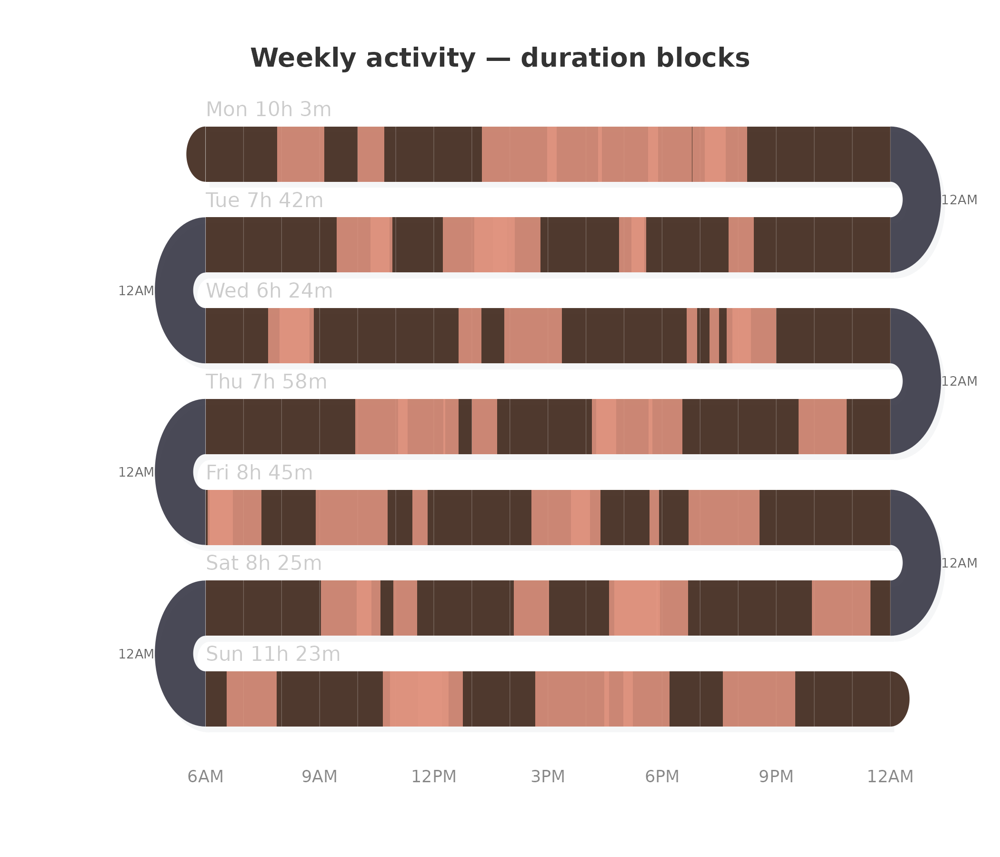
With flow = "natural", all bands read 6AM→12AM
left-to-right — no alternating. Compare: the default boustrophedon flips
morning events between left and right on alternate rows, while natural
keeps them consistently on the left:
set.seed(1)
d_morning <- data.frame(
day = rep(days, each = 15),
start = round(runif(105, 360, 720)),
duration = 0
)
activity_snake(d_morning, flow = "natural",
title = "Morning events — flow='natural' (6AM always left)")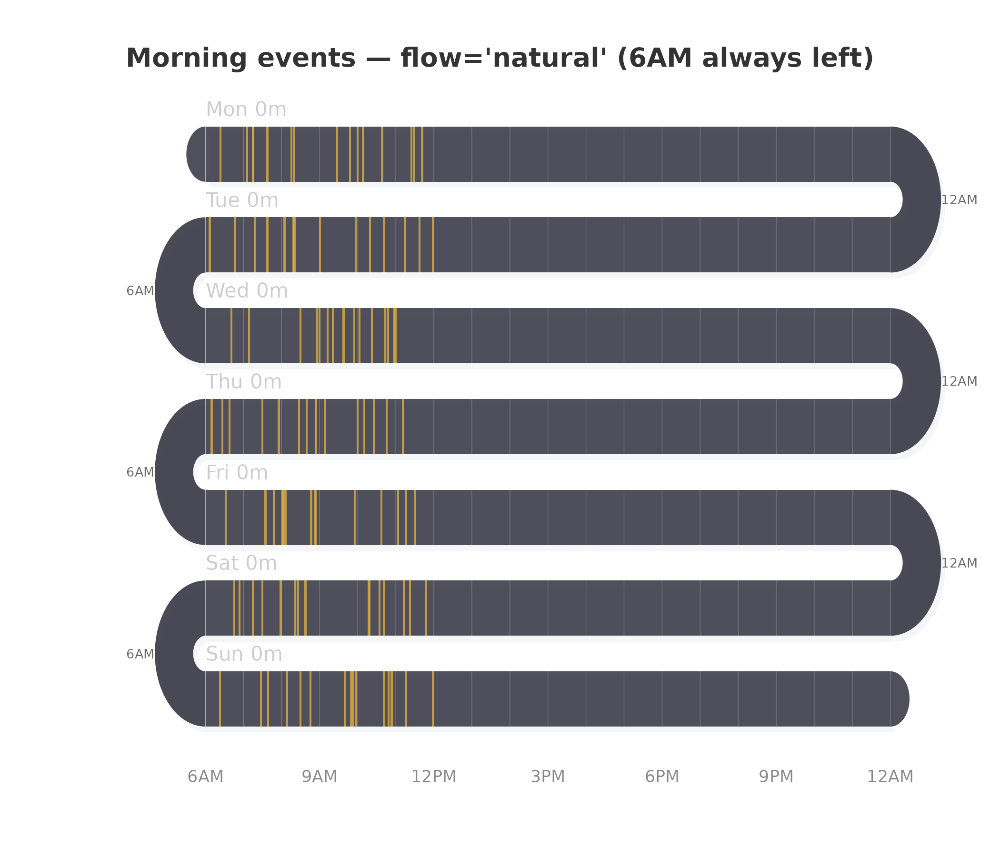
Line snake
line_snake() draws a continuous intensity line winding
through bands:
set.seed(42)
hours <- seq(0, 1440, by = 10)
d_line <- data.frame(
day = rep(c("Mon", "Tue", "Wed", "Thu", "Fri"), each = length(hours)),
time = rep(hours, 5),
value = sin(rep(hours, 5) / 1440 * 4 * pi) * 50 + 50 +
rnorm(5 * length(hours), 0, 8)
)
line_snake(d_line, fill_color = "#e74c3c")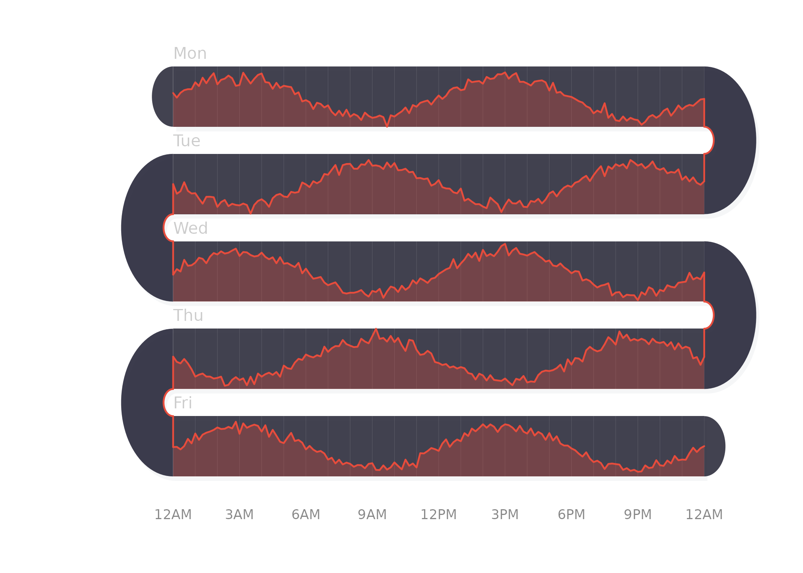
Timeline snake
timeline_snake() takes a 3-column data.frame (role,
start, end) and auto-generates monthly blocks, transition labels, and
band year labels:
career <- data.frame(
role = c("Intern", "Junior Dev", "Mid Dev",
"Senior Dev", "Tech Lead", "Architect"),
start = c("2015-01", "2015-07", "2017-01",
"2019-07", "2022-07", "2024-01"),
end = c("2015-06", "2016-12", "2019-06",
"2022-06", "2023-12", "2024-12")
)
timeline_snake(career,
title = "Software Engineer — Career Path (2015-2024)")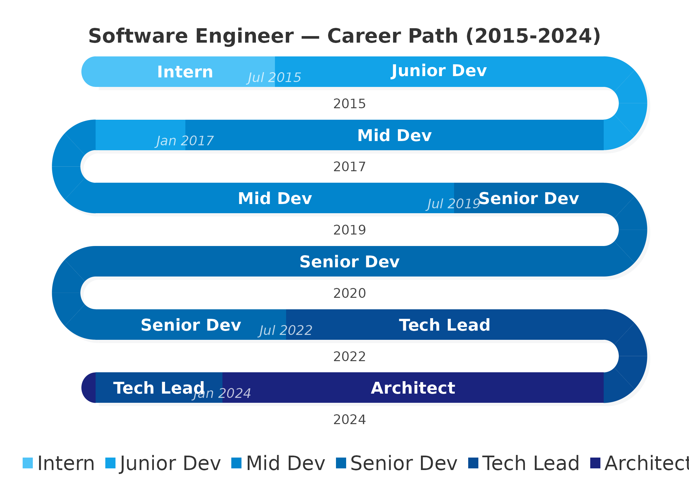
Tick lines with correlation arcs
Individual responses as colored tick marks, with inter-item Pearson r displayed at each U-turn arc:
survey_snake(ema_emotions, tick_shape = "line",
arc_fill = "correlation", sort_by = "mean",
colors = snake_palettes$berry, level_labels = labs5,
title = "Emotions — correlations at U-turns")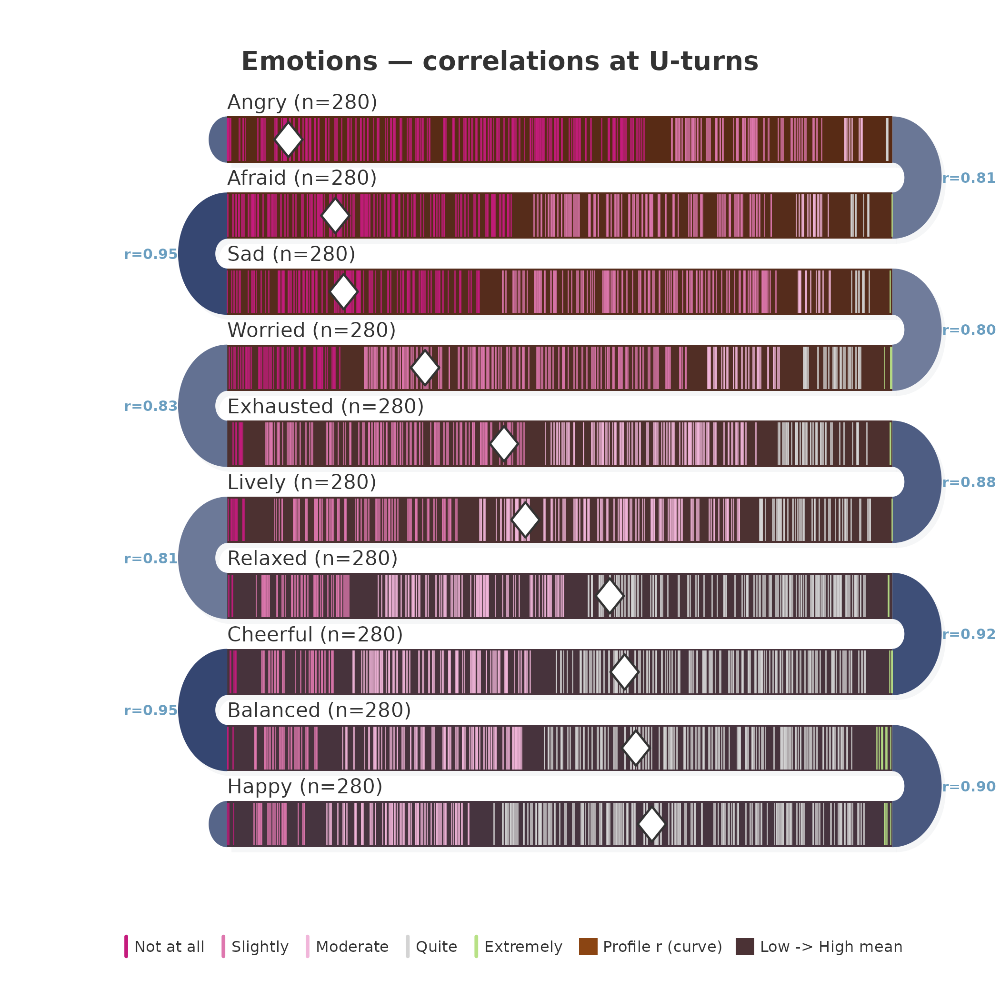
Dot plot with dark bands
Use band_palette for darker band shading. Dots with
jitter show individual responses:
survey_snake(ema_emotions, tick_shape = "dot", sort_by = "mean",
colors = snake_palettes$viridis, level_labels = labs5,
band_palette = c("#1a1228", "#1a2a42"),
title = "Emotions — dots on dark bands")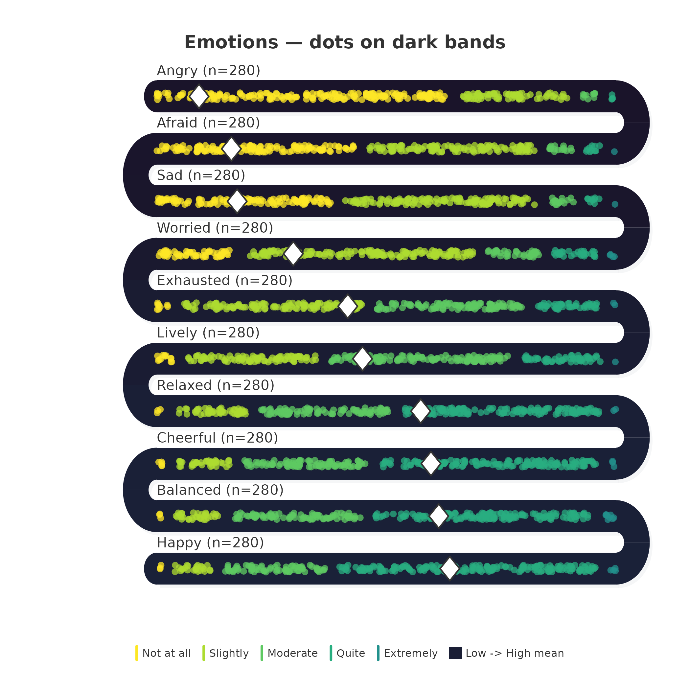
Mean and median markers
A diamond shows the item mean; a dashed line shows the median:
survey_snake(ema_emotions, tick_shape = "bar", sort_by = "mean",
show_mean = TRUE, show_median = TRUE,
colors = snake_palettes$sunset, level_labels = labs5,
title = "Emotions — mean (diamond) and median (dashed)")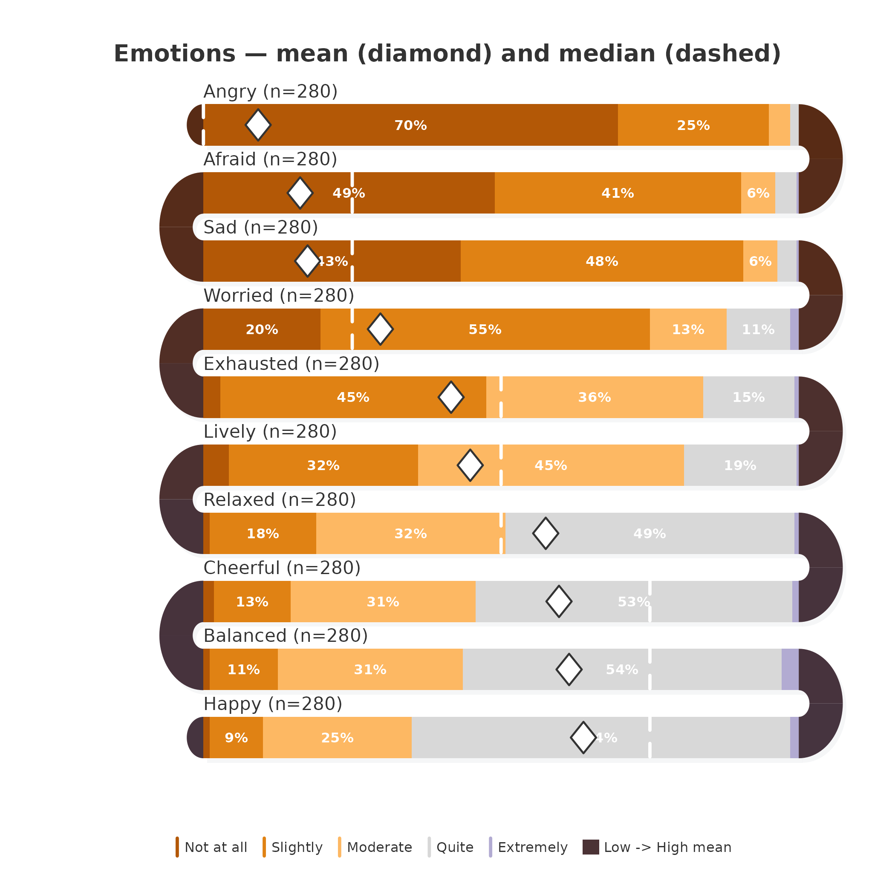
Faceted multi-construct
When column names share a prefix (e.g., Emo_,
Mot_), facet = TRUE auto-groups them into
panels. Prefixes are stripped from labels:
survey_snake(student_survey, facet = TRUE, facet_ncol = 2L,
tick_shape = "bar", sort_by = "mean",
colors = snake_palettes$earth, level_labels = labs5)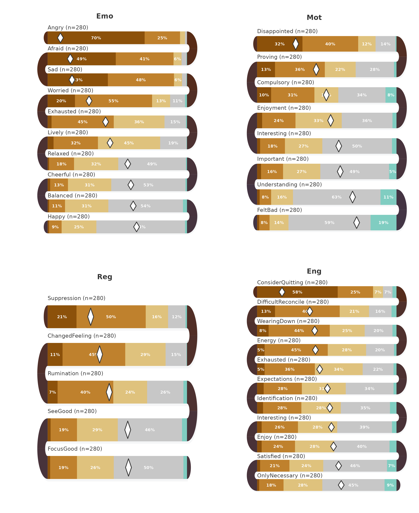
Survey sequence
survey_sequence() renders 100% stacked horizontal bars
in a serpentine layout:
survey_sequence(ema_emotions, colors = snake_palettes$earth)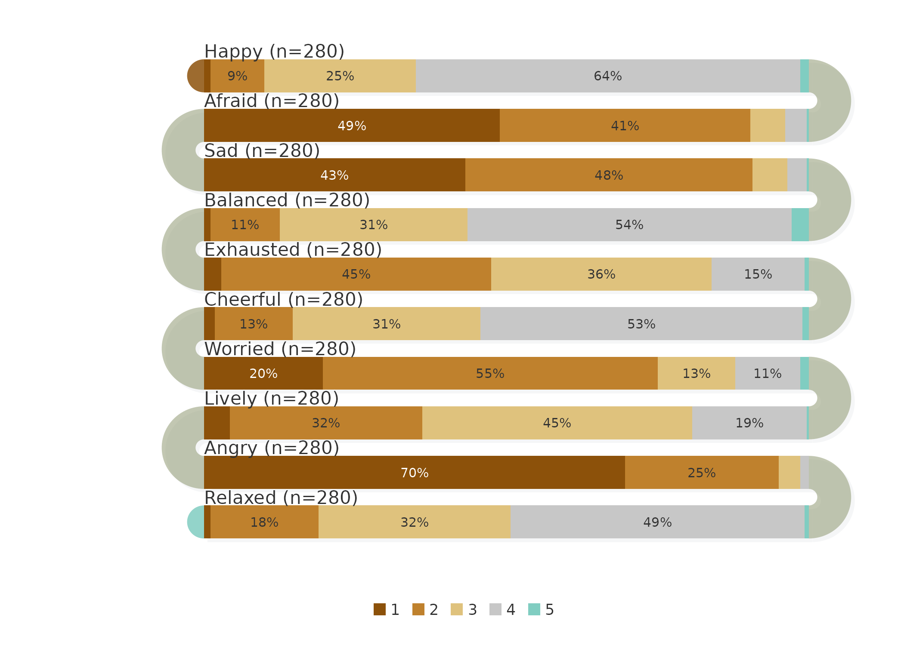
Matrix with row/col names — labels and levels are inferred automatically:
m <- matrix(c(50, 120, 80, 30,
40, 90, 110, 60,
70, 100, 70, 50,
80, 85, 95, 40,
30, 110, 90, 70,
60, 75, 105, 55,
45, 130, 65, 35), nrow = 7, byrow = TRUE)
rownames(m) <- c("Satisfaction", "Engagement", "Motivation",
"Belonging", "Autonomy", "Competence", "Wellbeing")
colnames(m) <- c("Low", "Medium", "High", "Very High")
survey_sequence(m, title = "Labels from matrix dimnames",
colors = snake_palettes$sunset)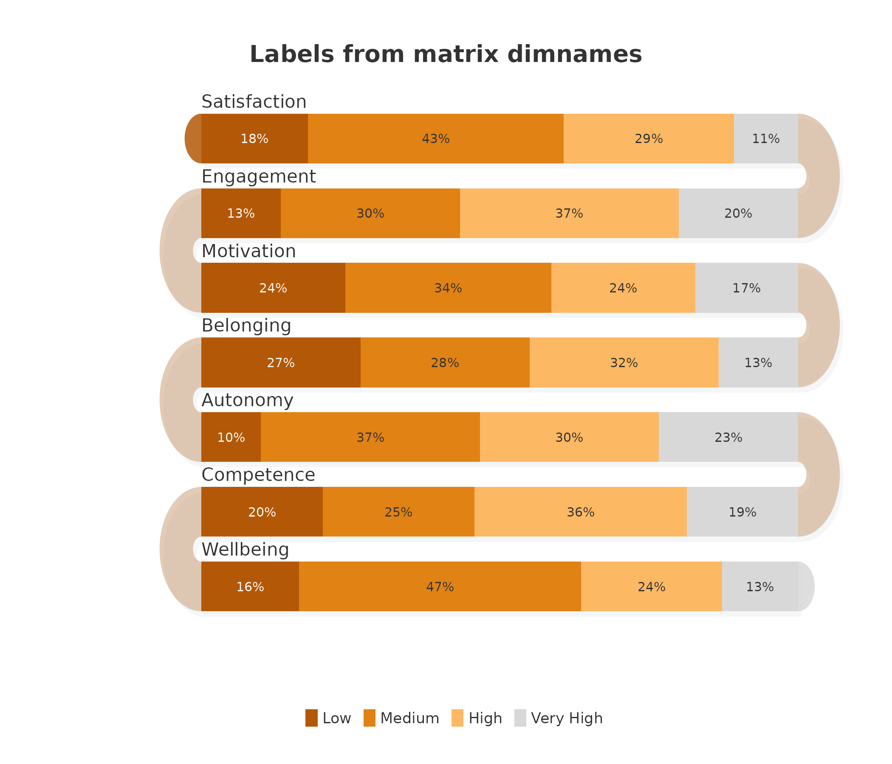
Sequential distribution
sequential_dist() is a monochrome variant of
survey_sequence():
sequential_dist(ema_emotions)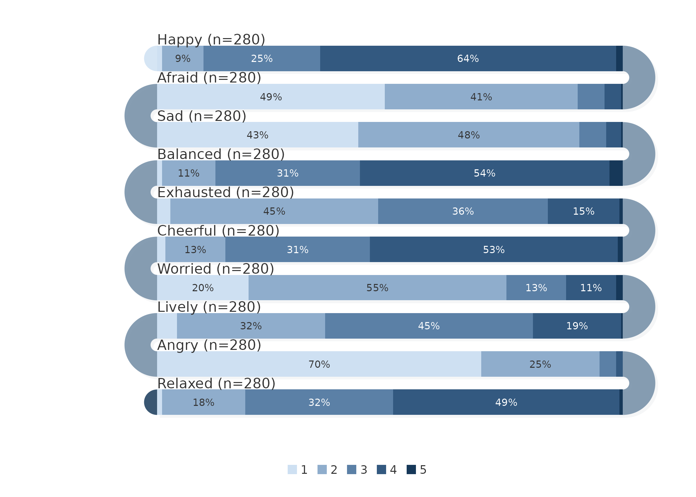
Sequence snake
sequence_snake() displays a state sequence as colored
blocks flowing through the serpentine layout — each block is one time
point colored by its state:
set.seed(42)
verbs <- c("Read", "Write", "Discuss", "Listen",
"Search", "Plan", "Code", "Review")
seq75 <- character(0)
while (length(seq75) < 75) {
seq75 <- c(seq75, rep(sample(verbs, 1), sample(1:4, 1)))
}
seq75 <- seq75[seq_len(75)]
sequence_snake(seq75, title = "75-step learning sequence")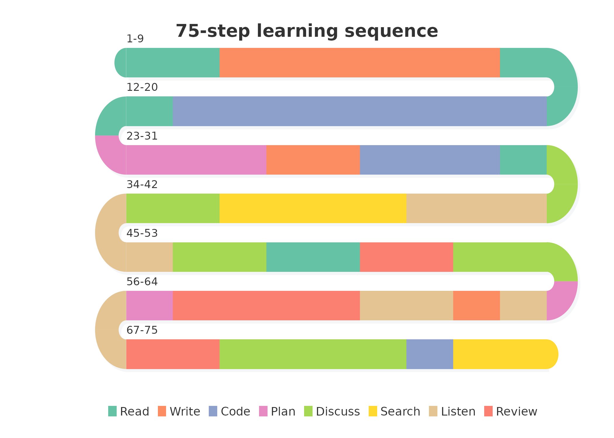
Pass a data.frame directly — the first character/factor column is auto-detected:
set.seed(1)
logs <- data.frame(
id = 1:80,
action = sample(c("Read", "Write", "Discuss", "Search", "Code",
"Plan", "Review", "Listen"), 80, replace = TRUE)
)
sequence_snake(logs, rows = 5,
title = "From a data.frame — column auto-detected")
#> Using column 'action' as sequence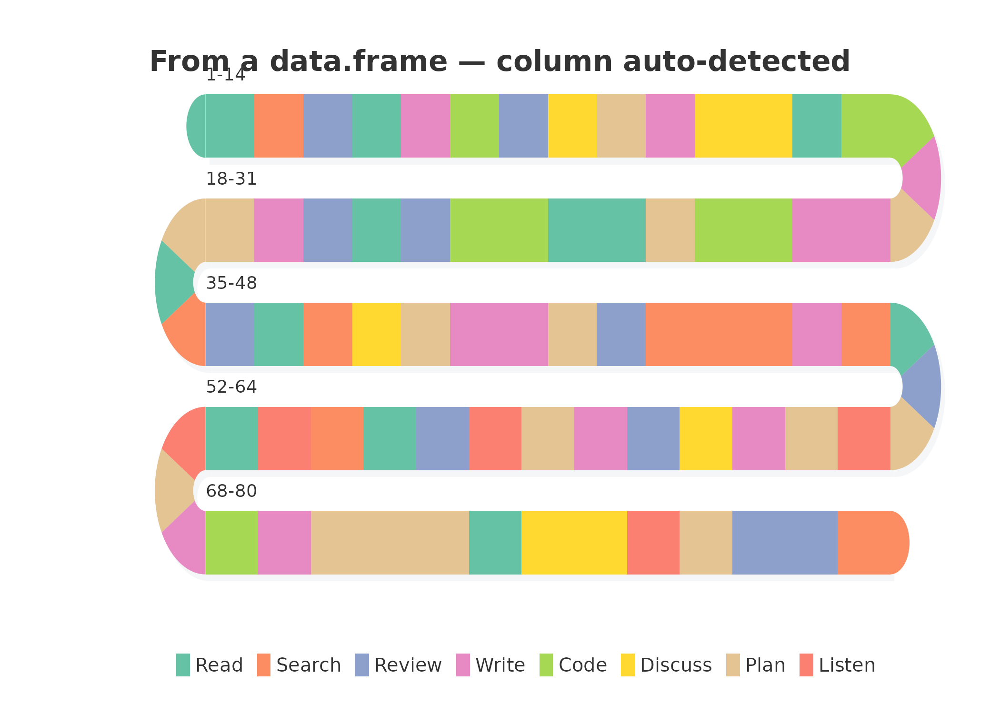
Built-in palettes
10 palettes are available via snake_palettes or
snake_palette():
names(snake_palettes)
#> [1] "classic" "earth" "ocean" "sunset" "berry" "blues" "greens"
#> [8] "grays" "warm" "viridis"Use any palette by name:
survey_snake(ema_emotions, colors = snake_palettes$earth, tick_shape = "bar")
snake_palette("sunset", n = 5) # interpolate to 5 colors